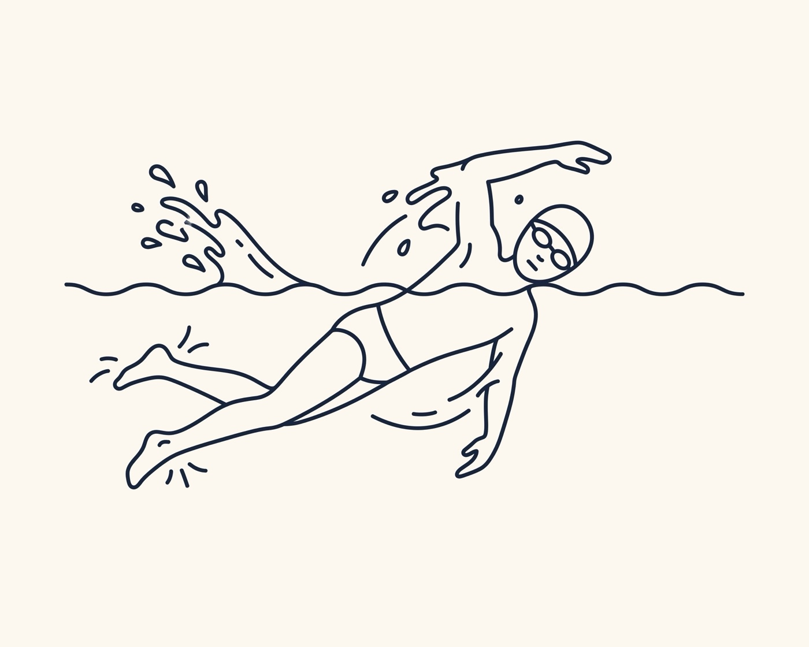
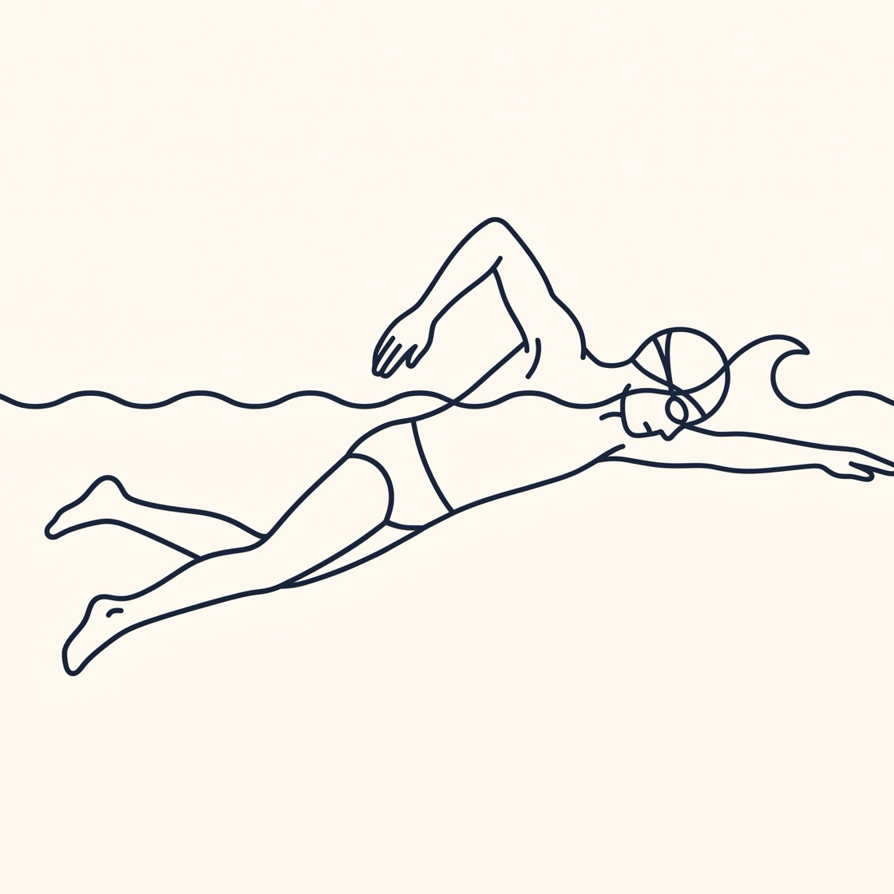
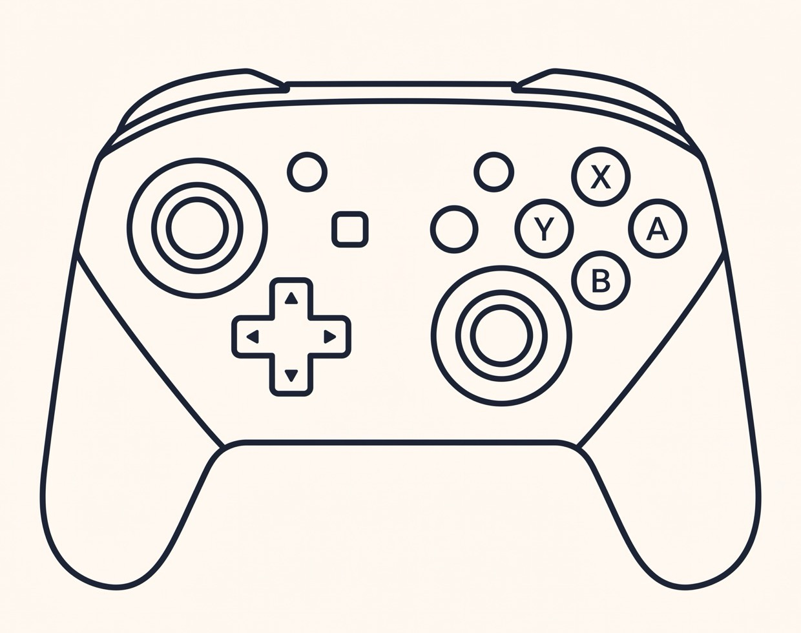
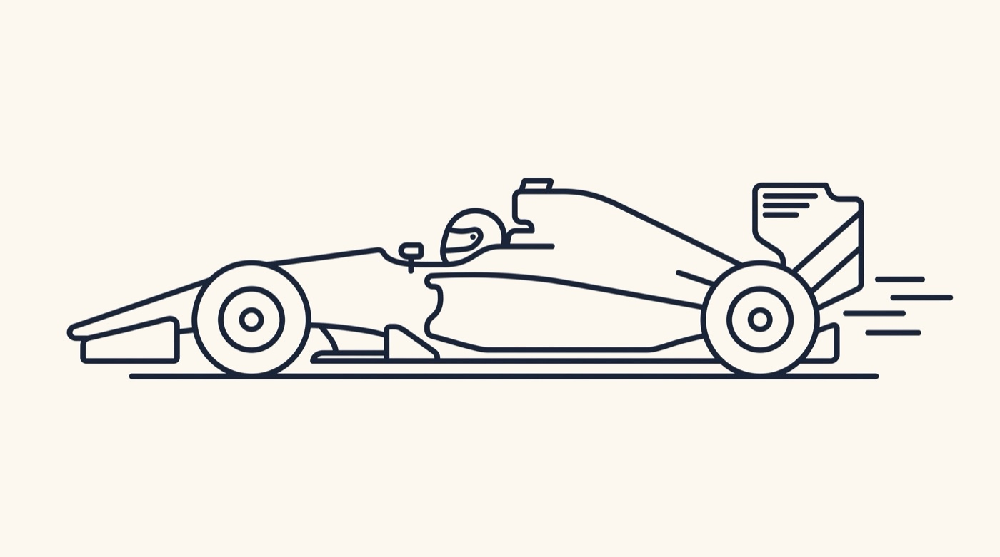
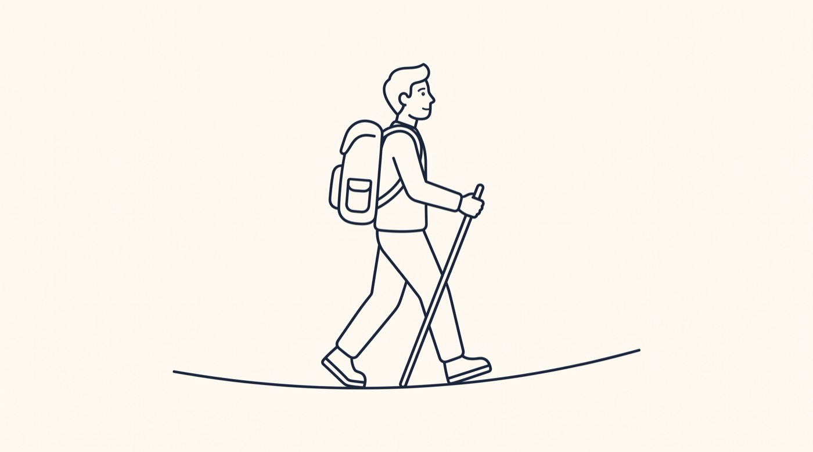
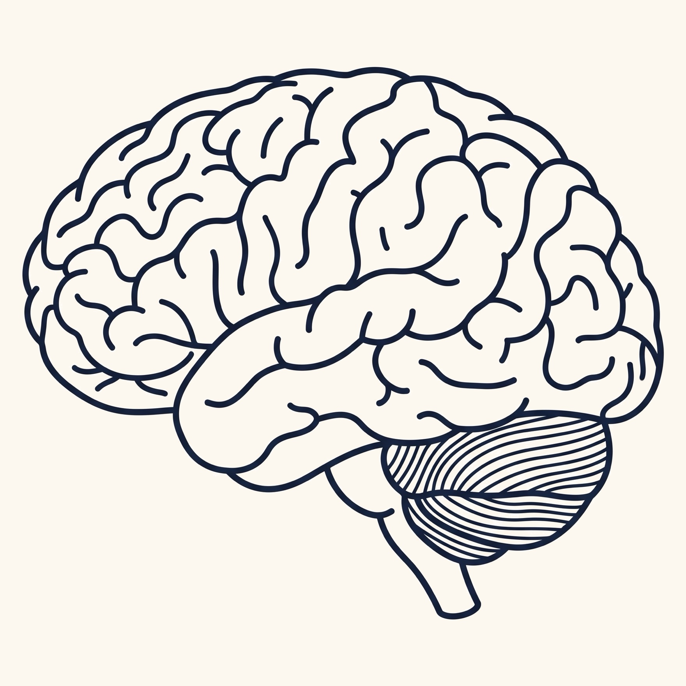
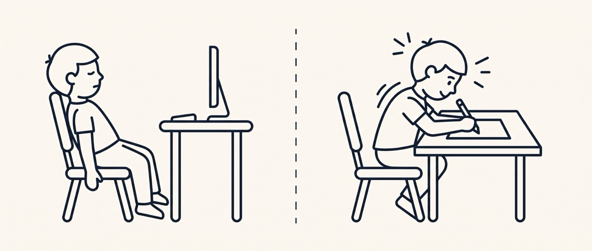
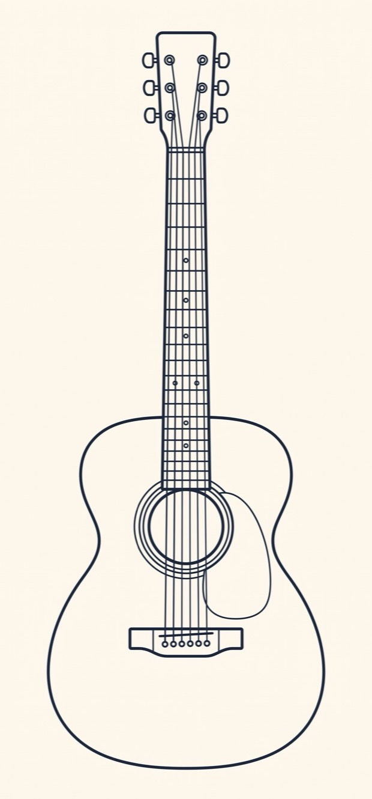

Block 1: warum manche Sachen leichtfallen und was Lernen kostet. Block 2: wie man es richtig macht.
K A I H Z D S N H
Blatt zu. Aufschreiben. … Schwer, oder?
K O N Z E N T R A T I O N
Gleich viele Buchstaben. Trotzdem einfach. Warum?
„KONZENTRATION“ kennst du schon. Für deinen Kopf ist das ein Päckchen. Die neun Zufallsbuchstaben sind neun einzelne Teile.
Dein Kopf schafft nur drei bis vier Sachen gleichzeitig.

Vier Sachen gleichzeitig. Das liegt nicht an dir.

Aus vier Sachen ist eine geworden. Der Kopf ist frei fürs Rennen.

War X jetzt springen oder Y?


Beide kommen an. Wer langsamer geht, sieht mehr.
Jedes Mal, wenn du etwas Schwieriges übst, baut dein Gehirn neue Verbindungen auf. Das kostet Kraft und fühlt sich anstrengend an. Genau dann passiert das Wachstum.

Eine Gruppe lernte, dass das Gehirn beim Üben wächst. Eine andere nicht. Nach zwei Jahren hatte die erste Gruppe bessere Mathenoten. Die andere nicht.
Blackwell, Trzesniewski & Dweck, 2007
Ein Wort. Es ändert alles.

Dem einen sieht man an, dass gerade etwas passiert. Dem anderen nicht.
Wenn du dich beim Lernen wohlfühlst, passiert wahrscheinlich gerade wenig.
Das ist der bequeme Satz. Wer ihn sagt, muss sich nicht anstrengen. Verständlich, aber er bringt dich nirgendwohin.
Der andere Satz ist anstrengender. Er funktioniert aber.
Ich behandle alle gleich, egal ob ihr gut oder schwach seid.
Sehen will ich nur, dass ihr bereit seid zu arbeiten.
Eine Stunde dasselbe probieren und es geht nicht? Dann hilft nicht mehr vom Gleichen.
Dann brauchst du einen anderen Weg, oder Hilfe.
Beides ist erlaubt. Fragen ist keine Schwäche, sondern eine Strategie.
Ein Musiker übt die schwere Stelle absichtlich langsam, wieder und wieder.
Gut werden dauert. Das ist normal.

Ihr habt den Text gelesen und dabei alles verstanden. Eine Stunde später war die Hälfte weg.
Verstehen und Können sind zwei verschiedene Sachen.
Du liest die Zusammenfassung dreimal. Fühlt sich sicher an. In der Arbeit ist alles weg.
Wiedererkennen ist nicht dasselbe wie Können.
Was nach einer Woche noch da war. Roediger & Karpicke, 2006.
Das Ziehen im Kopf ist kein Zeichen, dass du zu dumm bist.
Es ist das Geräusch, das Lernen macht.
Unbenotet. Privat. Ein fast leeres Blatt beim ersten Mal ist völlig normal.
Damit üben ist clever, nicht Betrug.
Fragt ältere Schüler, fragt Bekannte. Und gebt weiter, was ihr habt.
Zu wenig: dir ist es egal. Zu viel: Blackout. Dazwischen liegt dein bester Punkt. Wer geübt hat, landet öfter dort.
„Was war das Wichtigste heute?
Erkläre es in zwei Sätzen.“
Fünf Minuten. Ohne Heft. Aus dem Kopf.